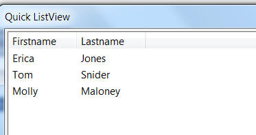

ListView Control - A Simplified Syntax
Xdialogs have been able do display the standard windows ListView control for some time now. Now, a new simplified syntax is available to make it easier to use a ListView control in an Xdialog. The following script shows an example:
dim list as c
list = <<%txt%
{data=1}Erica|Jones
{data=2}Tom|Snider
{data=3}Molly|Maloney
%txt%
ui_dlg_box("Quick ListView",<<%dlg%
[%M;K%.100,20id^"Firstname|Lastname"list!idchange];
%dlg%,<<%code%
if a_dlg_button = "idchange" then
a_dlg_button = ""
ui_msg_box("Note","User clicked on : " + id )
end if
%code%)
Note: The alternative technique is to use the Xdialog {ListView} command. The Action Scripting Genie generates code that uses the {ListView} command. The {ListView} command has more features than the syntax discussed here, but the Xbasic is more verbose.

The ListView displays data in a CR-LF delimited string. The string can contain an optional {Data=value} portion, to set the value of the variable assigned to the ListView.
The syntax for the ListView is:
[%directives%.width,height^#columHeaders"list!eventName?enableFlag]
Where:
| directives | directives is a semi-colon delimited list of directives.
M - turn on multiple selections K- keep the selected rows visible when the control does not have focus B=N - turn off the border around the ListView S=G - turn on grid lines |
| width | Width of the ListView in 'columns' |
| height | Height of the ListView in 'lines' |
| columnHeaders | A pipe delimited list of column headings.
Example: Firstname|Lastname|City You can set an explicit column width by specifying a column heading as columnName:width Example: Firstname:30|Lastname:50|City:40 |
| list | A CR-LF delimited list of data to show in the ListView. Each row can contain an optional {Data=value} element to control the
value that the bound variable is set to when the row is selected. Example: {data=0001}0001|John|Smith {data=0002}0002|Ken|Jones |
| eventName | The name of the Xdialog event handler. E.g. 'selection
To trap more events, such as double click on a row, or click on a column title, use an event name with a *. e.g. 'change_*'. See Learning Xdialog - ListView Control with Sorting - Using the ^" Command for more details. |
| enableFlag | If enableFlag is .f. the ListView is not enabled. |